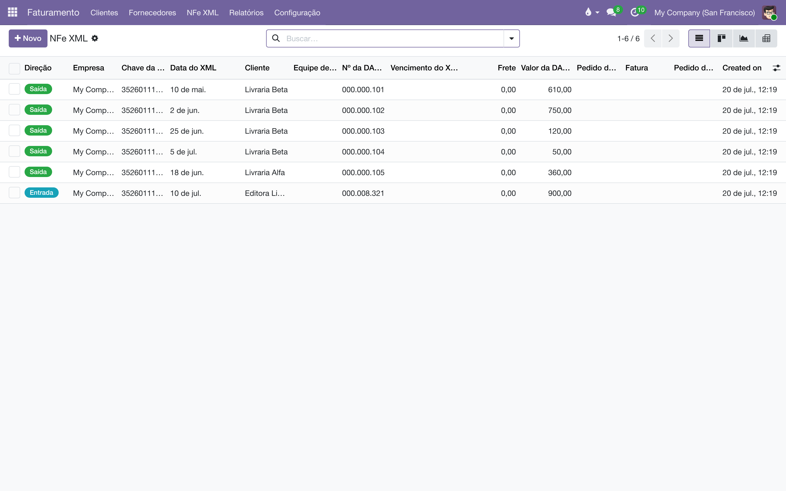
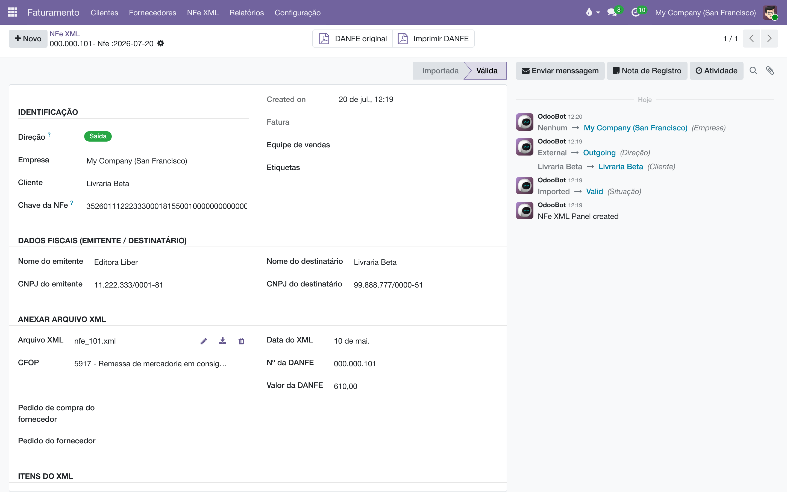

Traga para dentro do sistema os XMLs das notas fiscais que a editora emitiu e recebeu — para consultar, conferir e transformar em faturas, sem digitar nada de novo.
Cada XML de NF-e importado vira um registro no painel NFe XML. O sistema lê o arquivo e extrai o que interessa: quem emitiu e quem recebeu, o número e o valor da DANFE, a data de emissão, o CFOP, o frete, o vencimento e a lista de itens — livro a livro, com quantidade, preço e desconto.
A identidade de cada nota é a sua chave de acesso, aquele número de 44 dígitos impresso na DANFE. É por ela que o sistema:
Os XMLs importados são também a matéria-prima de outros módulos: a auditoria de consignação reconstrói a prateleira de cada livraria a partir dessas notas, e o Painel analítico (XML) resume tudo em uma página só.
Este módulo cuida da nota que chega: ele importa XMLs de notas já autorizadas e não fala com a SEFAZ para emitir. Quem emite é a emissão de NF-e — e as notas emitidas por lá caem neste mesmo painel, pela mesma chave de acesso, ao lado das que a editora recebeu.

Na importação, o sistema compara o CNPJ do emitente e o do destinatário com os CNPJs das empresas cadastradas no banco e classifica cada nota:
| Direção | Significado |
|---|---|
| Saída | Emitida por uma das nossas empresas — vendemos ou remetemos. |
| Entrada | Endereçada a uma das nossas empresas — recebemos. |
| Interna | Entre duas empresas nossas. |
| Externa | Nenhum dos lados é nosso. |
O outro lado da nota (a livraria, o fornecedor) vira o Cliente do registro. Se esse CNPJ ainda não existe no cadastro de contatos, o contato é criado automaticamente com o nome e o CNPJ que constam no XML — e se já existe com um nome diferente, o nome é atualizado, porque a razão social da nota fiscal é a fonte oficial.
Cada usuário só enxerga as notas das empresas às quais tem acesso: a lista respeita o seletor de empresas no topo da tela.
Casar nota com contato é casar documento com documento, e por isso o módulo também cuida de como o documento é escrito e do que ele diz sobre o contato. Vale para todo contato, digitado ou importado — não só para os que nascem de um XML.
| Regra | O que acontece |
|---|---|
| A pontuação se escreve sozinha | Digite 43791310000199 e o campo grava 43.791.310/0001-99; onze dígitos viram 171.037.078-55. Vale ao digitar e ao gravar, inclusive por importação de planilha. |
| Quem tem CNPJ é empresa | Um contato com CNPJ é marcado como Empresa — um CNPJ é emitido a pessoa jurídica, e um cadastro que diga o contrário está errado. |
| Quem tem CPF é pessoa — só ao nascer | Um contato novo com CPF é marcado como Indivíduo. Num contato já salvo, o sistema não mexe: ver o aviso abaixo. |
| Dígito verificador confere, mas não barra | Documento cujos dígitos não fecham gera um aviso na tela; o contato pode ser salvo assim mesmo. |
O CNPJ promove a empresa; o CPF não rebaixa uma empresa já cadastrada. É comum uma editora ter um CPF digitado no campo do documento — nesses casos o documento é que está errado, não o cadastro, e rebaixar a empresa a pessoa física corromperia a ficha, os contatos pendurados nela e os pedidos. Contato-filho cujo documento é o da matriz também fica de fora: o Odoo replica o CNPJ da empresa nos contatos dela, e promover a pessoa inventaria uma empresa que não existe.
O Odoo tem o módulo base_vat, que também valida CPF e CNPJ. Ele não é usado aqui por duas razões: ele desfaz a pontuação a cada gravação, e valida como impedimento — um cadastro migrado com documentos irregulares deixaria de poder ser salvo. Aqui a conferência avisa e deixa passar.
Para importar por ZIP não é preciso configurar nada: instale o módulo e importe. Duas configurações são opcionais:
O sistema pode baixar sozinho, todos os dias, as notas emitidas contra as suas empresas (o serviço de distribuição de documentos fiscais da SEFAZ). Para cada empresa que deve participar:
A senha do certificado fica gravada no banco de dados. Restrinja o acesso às configurações de empresa a quem realmente precisa.
O módulo instala uma tabela de CFOPs e classifica os códigos mais comuns do dia a dia da editora (consignação, acerto, devolução, bonificação, feira, venda). Quando um XML chega com um CFOP que a tabela não conhece, o código é criado automaticamente, sem classificação, e fica aguardando que alguém diga o que ele significa — assim a nota nunca desaparece das análises por causa de um código novo.
É o caminho para carga em lote: os XMLs exportados do emissor, ou o histórico de anos, tudo de uma vez.
.zip contendo os XMLs.O que acontece com cada arquivo dentro do ZIP:
Pode reimportar sem medo. A trava pela chave de acesso torna qualquer importação repetível: nada é duplicado, só o que ainda não existia entra.
Um registro recém-importado guarda o arquivo, mas ainda não foi lido em detalhe — a situação Importada indica isso. O processamento extrai os campos e a lista de itens e leva a nota para Válida.
Não é obrigatório fazer isso à mão: um agendamento processa as notas pendentes a cada 10 minutos. O botão serve para quem não quer esperar.
Durante o processamento, os itens da nota são casados com os produtos do catálogo pelo código interno ou código de barras (na prática, o ISBN). Item sem produto correspondente gera um produto novo com o nome, o código e o preço que constam no XML. O texto "SEM GTIN", que a NF-e usa para item sem código de barras, é ignorado — ele nunca vira código de produto.
Se algo der errado com uma nota, só ela fica com situação Erro, com a explicação registrada no histórico de mensagens do próprio registro; as demais do lote seguem normalmente. Corrigida a causa, basta processá-la de novo.

Com a sincronização configurada (acima), um agendamento diário consulta a SEFAZ para cada empresa habilitada e importa o que houver de novo. Para acompanhar ou disparar na hora:
As notas baixadas entram no mesmo painel NFe XML das demais, com a mesma trava de duplicidade; a lista SEFAZ é só o diário de bordo da sincronização. A empresa dona de cada nota é deduzida do próprio XML, pelo CNPJ.
A SEFAZ limita a frequência de consultas. Se uma varredura terminar com a situação Rate Limited, é normal: o serviço pediu uma pausa, e a próxima varredura continua de onde parou — o marcador Último NSU da empresa guarda o ponto.
Uma nota processada pode virar fatura com os itens já preenchidos:
A fatura nasce com:
Guardas do lote: nota cancelada ou já ligada a uma fatura é pulada; se já existe uma fatura ativa com a mesma chave e o mesmo tipo, o sistema apenas aponta para ela em vez de criar outra; um problema em uma nota não derruba as demais — a explicação fica no histórico do registro.
Na fatura, aba Outras informações, o campo Chave da NFe mostra os 44 dígitos e, ao lado, o vínculo com o registro do XML e o número da DANFE. Na lista de faturas, o filtro From NFe XML separa o que nasceu de XML do que foi digitado.
O cancelamento de uma NF-e é um documento próprio (um evento), separado da nota. Quando ele chega — por ZIP ou pela SEFAZ — o sistema localiza a nota pela chave de acesso e:
Nota cancelada não entra nos lotes de criação de fatura. A carta de correção não cancela nada e é ignorada.
O menu abre, em outra aba, uma página que resume todas as notas não canceladas das empresas ativas. Além dele, a lista do painel oferece as visões de gráfico e de tabela dinâmica do próprio Odoo, com valor da DANFE e frete como medidas.
| Regra | O que ela garante |
|---|---|
| Chave de acesso única no painel | Um XML por chave. Reimportar (ZIP, SEFAZ, anexo) nunca duplica. |
| Chave com exatamente 44 dígitos na fatura | O campo Chave da NFe recusa qualquer outro formato. |
| Uma fatura ativa por chave e tipo | A mesma NF-e não gera duas faturas de cliente (nem duas de fornecedor). Faturas canceladas liberam a chave. |
| Parceiro conferido contra o XML | A fatura só é criada se o CNPJ do parceiro for o do emitente ou o do destinatário da nota. |
| XML que não é NF-e é recusado | Arquivos sem a chave de acesso ou fora do padrão da NF-e não entram. |
| CFOP desconhecido é criado sem efeito | A nota aparece nas listas normalmente e o código fica aguardando classificação — nada some em silêncio. |
| Multiempresa | Cada usuário vê apenas as notas das empresas às quais tem acesso. |
A nota ficou com situação Erro. Abra o registro e leia a última mensagem do histórico — ela diz o que travou (um XML truncado, um campo fora do padrão). Corrigida a causa, clique em Processar arquivo XML de novo; a situação Erro é reprocessável.
Importei o ZIP e "faltam" notas. Quase sempre são repetidas: a chave de acesso já existia e a importação as pulou. Procure pela chave no campo de busca da lista. Verifique também o seletor de empresas — nota de outra empresa não aparece.
A fatura veio sem algum item. Itens cujo produto não existe no catálogo (e cujo código não permitiu criar um) são pulados na criação da fatura, e a nota recebe no histórico a lista dos produtos com problema. Cadastre ou corrija o produto e crie a fatura outra vez.
O cancelamento chegou antes da nota. Dentro de um mesmo ZIP isso é resolvido automaticamente (as notas entram primeiro, os cancelamentos depois). Se o evento veio sozinho, ele fica guardado e a nota é marcada assim que for importada pela mesma chave.
Veja também
Todo documento do sistema carrega um prefixo na numeração — CO/2026/00001 é um acerto, AT/2026/00042 é um chamado. A lista é a mesma em todos os manuais:
| Prefixo | O que é |
|---|---|
C | Pedido de consignação: o pedido que põe livros na prateleira do cliente — C00001, no lugar do S da venda comum. |
CO/ | Consignação, o documento do acerto: registra o que o cliente vendeu e vira venda — CO/2026/00001. |
CR/ | Retorno de consignação: o documento que pede a devolução dos exemplares da prateleira — CR/2026/00001. |
CA | Auditoria de consignação: reconstrói o saldo da prateleira do cliente pelas notas fiscais e registra o ajuste — CA00001. |
CP/ | Campanha de consignação: o sortimento-alvo por canal — quantos exemplares de cada título as prateleiras devem ter — CP/2026/0001. |
AC/ | Acordo de Consignação: o contrato com a livraria, dono da prateleira — AC/2026/00001. |
COM/OUT/ | A série da remessa de consignação ao cliente, do armazém à livraria — COM/OUT/2026/00001, no espelho do WH/OUT. |
MP/OUT/ | A série das entregas de marketplace (Olist): o pacote de pessoa física, na caixa de despacho própria do depósito — MP/OUT/2026/00001. |
COM/MOV/ | A série dos fluxos internos de prateleira da consignação — COM/MOV/2026/00001. |
COM/IN/ | A série do retorno de consignação, da prateleira ao armazém — COM/IN/2026/00001, no espelho do WH/IN. |
REM/ | Remessa: a nota de simples remessa, sem cobrança — a numeração vem do diário fiscal REM. |
COL/ | Coleta: o lote do pedido de coleta às transportadoras — COL/2026/00001. |
AT/ | Atendimento: o chamado nascido do e-mail comercial — AT/2026/00001. |
MBX/ | O lote de envio de metadados à Metabooks — MBX/2026/00001. |
Impostos de Direitos Autorais/ | O lote da fatura acumuladora do IRRF retido dos autores no mês. |
Royalties entre Empresas/ | O lote da fatura acumuladora de royalties entre as empresas da casa. |
| Do próprio Odoo | |
S | Pedido de venda comum — S00001; o pedido de consignação usa o C no lugar. |
WH/OUT | Entrega comum do armazém: a transferência de saída padrão do Odoo. |
WH/IN | Recebimento do armazém: a transferência de entrada padrão do Odoo. |
Bases antigas guardam transferências nas séries COM/ e RET/, de antes da separação por direção — o histórico não é renumerado.
Manual completo, com busca e as demais páginas: Importação de XML de NF-e.